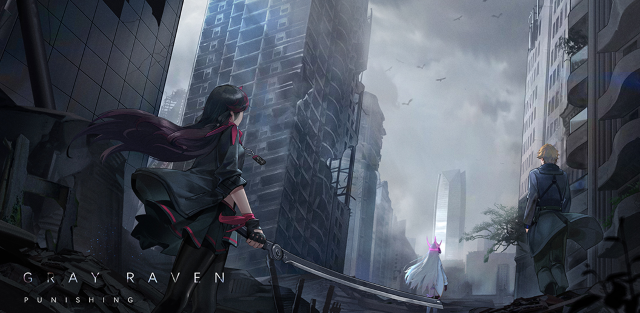
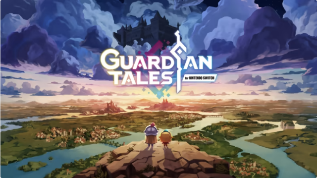
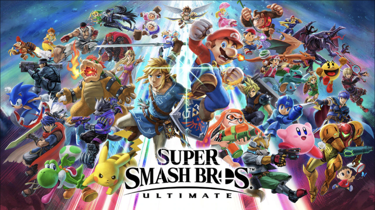

Punishing: Gray Raven takes place in a post-apocalyptic setting where humanity has almost been eradicated due to the Punishing Virus, an extremely dangerous virus that infects and takes control of both human mind and machinery, which are called the Corrupted, to attack anything that shows vital life. Survivors are forced to take refuge in a space station called Babylonia, which is their last line of defense as well as their only hope in reclaiming Earth. Humanity develops technology that helps humans resist the virus through turning a minority of them into cyborgs, known as the Constructs. In the game, you are the squad commander of a team named Gray Raven consisting of elite Constructs in a grand mission to find a clue and suppress the Punishing Virus.
This game is the top on my list because of its unique combat mechanic that is fast-paced and heavily skill-based. The characcter designs are detailed with cool artstyle, actual character development, and godlike gameplay animation (seriously way too good). The story is heavy, has good depth and can be really emotional. The BGM are bangers that elevates the gameplay experience considerabily. Not to mention the chibi characters are super adorable.
Guardian Tales is a 2020 RPG video game developed by Kong Studios. The game tells the story of the Guardian Knight, a newly recruited member of the Guardians, Kanterbury Kingdom's royal guard. After completing his/her first training as a Guardian, the Guardian Knight embarks on a journey to recover the almighty Champion Sword and to find 12 powerful Champions in order to obtain the strength to push back the vile Invader who occupied the Earth.
This game has a lot mechanics that blends really well together, from old-style RPG, hack-and-slash to mordern gacha. The gameplay style is up to the player weather they want to have a casual play through with the storyline or challenging themselves through brain-wrecking puzzles, overpowered enemies, and intense PVP. And the best charm of this game is the ridiculous amount of references to famous book, movies, locations, other games, etc, despite being a pixel game (you can tell by the name "Kanterbury" which is a refernce to the book The Canterbury Tales by Geoffrey Chaucer. I like to call this game the "hotpot" of video game.
Super Smash Bros. Ultimate is a 2018 crossover fighting game developed by Bandai Namco Studios and Sora Ltd. and published by Nintendo. The main gamplay requires controlling one of the various characters where players must use different combination of offense and defense to weaken their opponents and knock them out of an arena. The game features 89 playable fighters, all coming from various well-known game series such as Pokemon, Final Fantasy, Kirby, Persona, Xenoblades, etc.
This game has wide variety of character with each having completely diferent playstyles, making it extremely fun to clash with other player in a contest purely base on skill and to show how much you have master a certain character. Both me and my brother enjoy this game a lot (he's really good and often bully me so I had to sneak practice behind his back to get revenge, and I did)